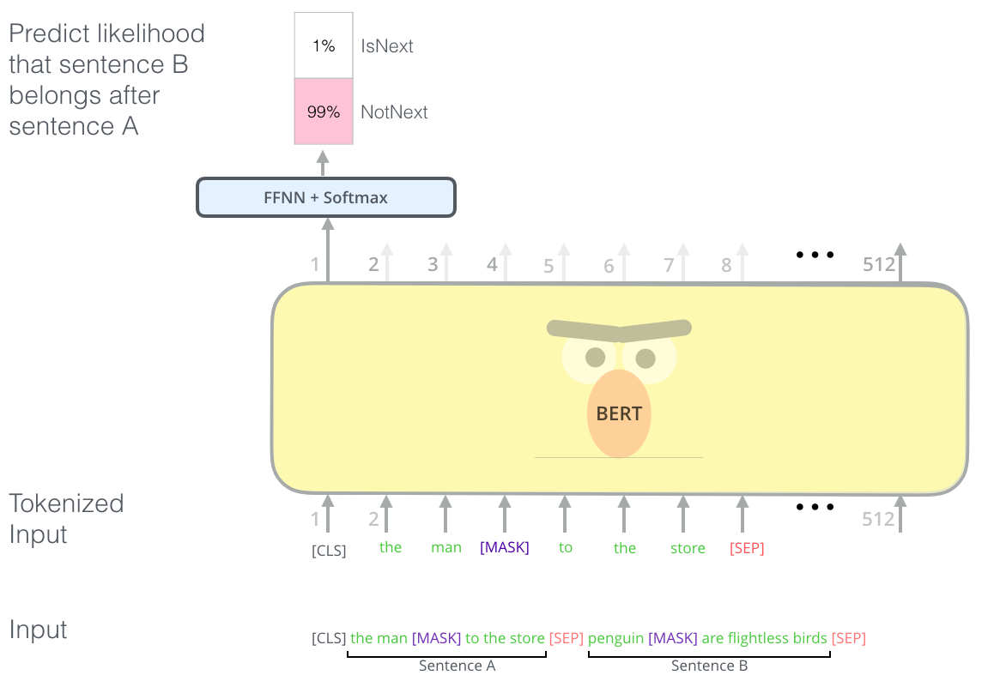

BERT
Contents
BERT#
2018年Googleが発表したBERT（Bidirectional Encoder Representations from Transformers）は、エンコーダ構成のTransformersを採用し、先行するトークン列と後続するトークン列の双方向性から文脈を捉えます。
BERTは、Wikipediaと7,000冊の書籍を合わせた大規模なコーパスを使って事前学習されたモデルを、下流タスクのデータセットでファインチューングすることで、様々なタスクの性能を大幅に改善できることが示されました。
事前学習: 大規模なコーパスを用いて、特定なタスクを学習することで、広範な言語データからパターンを学習し、汎用的な言語理解の能力を身につける。
ファインチューング：、特定のタスクや領域に特化した小さなデータセットを用いて、事前学習したモデルを微調整します。この微調整により、モデルは特定のタスクや領域に適応し、高い精度を達成することが可能です。
BERTの事前学習#
入力表現#

BERTで入力を作成する際、入力の開始を表す[CLS]トークンと、入力の区切りを表す[SEP]トークンという二つの特殊トークンが使われます。
またよく使われる特殊トークンとして、マスクタスクための[MASK]トークン、vocabularyに含まれていないことを示す[UNK]トークンがあります。
入力トークン埋め込みと位置埋め込み以外、それぞれのテキストの範囲を区別しやくするためにsegment embeddingという埋め込みが導入されています。
まとめると、BERTの入力埋め込み\(x_i\)は、トークン埋め込み、位置埋め込み、segment埋め込みより加算されます。
マスク言語モデリング#
マスク言語モデリングは、トークンの穴埋め問題を解けるタスクです。具体的には、ランダムにトークン列中のトークンを隠して、その周辺の単語からマスクされた単語を予測することが求められます。
ここで、先行するトークンと後続トークンの双方の情報が使われていますので、全体の文脈を捉える学習を実現しています。

次文予測#
次文予測タスクでは、2つの文が与えられ、一方が他方の直後に来るかどうかを判定することが求められます。

ファインチューング(Fine-Tuning)#
様々なタスクにおいて、事前学習モデルをもとにしてそれぞれのタスクに特化したモデルを作るためのステップはファインチューングです。
事前学習タスクから下流タスクに切り替える時、モデルの最後のレイヤーをタスクに適したものに置き換える必要があります。この最後の層はヘッドと呼ばれ、タスクに固有な部分です。
残りの部分はボディと呼ばれ、タスクに依存しない事前学習された部分であり(トークン埋め込み層やTransformer層が含まれ)、一般的な言語の理解を行うための基本的な情報を含んでいます。
例えば、テキスト分類の場合、追加層としては、BERTの最後の隠れ層からの出力に冒頭のSpecial token[CLS]を全結合層（Dense Layer）に経由し、各カテゴリーに属する確率を出力します。それは、[CLS]トークンは入力テキスト全体の文脈情報を集約すると考えるためです。

Huggingface transformerを使う#
転移学習は事前学習済みモデルを新しいタスクに再利用するといった強みがあります。そのため、事前学習済みのモデルを素早く共有、ロードすることは重要です。
Hugging Face Hubは、モデル、データセットとデモを備えたプラットフォームです。

Huggingface transformerは、自然言語処理を中心に最先端のTransformerベースのモデルを効率に利用するためのオープンソースライブラリです。
多数の事前学習済みモデル: ライブラリは、BERT、GPT-2、RoBERTa、T5、DistilBERTなど、さまざまな有名なNLPモデルの事前学習済みバージョンを提供しています。
モデルの利用の簡易化: 事前学習済みのモデルを簡単にダウンロードし、特定のタスクにファインチューニングするための高レベルのAPIを提供しています。
Tokenizers: ほとんどのモデルには、テキストデータをモデルが扱える形式に変換するためのトークナイザが付属しています。これはテキストの前処理を簡単に行うためのツールです。
Model Hubの統合: Hugging FaceのModel Hubと直接統合されており、コミュニティによって共有されている数千もの事前学習済みモデルに簡単にアクセスできます。
pipline#
pipelineというクラスで、特定のタスクを実行するために事前学習されたモデルとトークンナイザーを統合し、簡単に使用することができます。
import pandas as pd
from transformers import pipeline
#!pip install unidic-lite
#!pip install fugashi
fill_mask = pipeline(
"fill-mask",
model="cl-tohoku/bert-base-japanese-v3"
)
masked_text = "東北大学は[MASK]市に位置しています。"
output = fill_mask(masked_text)
display(pd.DataFrame(output))
| score | token | token_str | sequence | |
|---|---|---|---|---|
| 0 | 0.600762 | 14424 | 仙台 | 東北 大学 は 仙台 市 に 位置 し て い ます 。 |
| 1 | 0.048195 | 19197 | 盛岡 | 東北 大学 は 盛岡 市 に 位置 し て い ます 。 |
| 2 | 0.037116 | 15135 | 青森 | 東北 大学 は 青森 市 に 位置 し て い ます 。 |
| 3 | 0.026598 | 15394 | 山形 | 東北 大学 は 山形 市 に 位置 し て い ます 。 |
| 4 | 0.025400 | 14062 | 福島 | 東北 大学 は 福島 市 に 位置 し て い ます 。 |
summarizer = pipeline("summarization", model="facebook/bart-large-cnn")
ARTICLE = """ New York (CNN)When Liana Barrientos was 23 years old, she got married in Westchester County, New York.
A year later, she got married again in Westchester County, but to a different man and without divorcing her first husband.
Only 18 days after that marriage, she got hitched yet again. Then, Barrientos declared "I do" five more times, sometimes only within two weeks of each other.
In 2010, she married once more, this time in the Bronx. In an application for a marriage license, she stated it was her "first and only" marriage.
Barrientos, now 39, is facing two criminal counts of "offering a false instrument for filing in the first degree," referring to her false statements on the
2010 marriage license application, according to court documents.
Prosecutors said the marriages were part of an immigration scam.
On Friday, she pleaded not guilty at State Supreme Court in the Bronx, according to her attorney, Christopher Wright, who declined to comment further.
After leaving court, Barrientos was arrested and charged with theft of service and criminal trespass for allegedly sneaking into the New York subway through an emergency exit, said Detective
Annette Markowski, a police spokeswoman. In total, Barrientos has been married 10 times, with nine of her marriages occurring between 1999 and 2002.
All occurred either in Westchester County, Long Island, New Jersey or the Bronx. She is believed to still be married to four men, and at one time, she was married to eight men at once, prosecutors say.
Prosecutors said the immigration scam involved some of her husbands, who filed for permanent residence status shortly after the marriages.
Any divorces happened only after such filings were approved. It was unclear whether any of the men will be prosecuted.
The case was referred to the Bronx District Attorney\'s Office by Immigration and Customs Enforcement and the Department of Homeland Security\'s
Investigation Division. Seven of the men are from so-called "red-flagged" countries, including Egypt, Turkey, Georgia, Pakistan and Mali.
Her eighth husband, Rashid Rajput, was deported in 2006 to his native Pakistan after an investigation by the Joint Terrorism Task Force.
If convicted, Barrientos faces up to four years in prison. Her next court appearance is scheduled for May 18.
"""
print(summarizer(ARTICLE, max_length=130, min_length=30, do_sample=False))
[{'summary_text': 'Liana Barrientos, 39, is charged with two counts of "offering a false instrument for filing in the first degree" In total, she has been married 10 times, with nine of her marriages occurring between 1999 and 2002. She is believed to still be married to four men.'}]
Huggingface Hubで日本語のセンチメント分類ためのモデルを探し、piplineでセンチメント分類器を実装しなさい。 以下のテキストに対する分類結果を確認しよう。
この製品は全く役に立ちませんでした
今日はいい天気ですね
世界経済も、米国が12月に続き３月にも追加利上げを実施するなど、先進国を中心に回復の動きとなりました
一度は訪れてみたいけど、たぶんもう行かない
あの政治家に向けられているのは、政策への批判じゃなくて誹謗中傷だろ
まとめ : word2vecからBERTまで#
人間が使う自然言語をコンピュータに処理させるため、言語を数値形式で表現するモデリングのプロセスが必要とされ、どのようなモデルを採用するかによって分析の方向性は異なっています。
最も基本的なモデリングアプローチとして、文書を単語の集合とそれぞれの単語の頻度情報に変換するバグオブワーズ(bag of words)があげられます。この手法は、文書の基本的な内容を捉えるのに有効であるが、単語の順番や意味のニュアンスなどの情報はすべて捨象されています。
より複雑な言語の特性を捉えるために、大量のコーパスを使った学習により、言語の文法や意味構造など多くの情報を埋め込んだ高度なモデルが期待されています。word2vecをはじめとする単語分散表現モデルは、単語を「意味」情報を表現したベクトルにマッピングすることができます。
word2vecに単語分散表現の学習では、「単語の意味は、その単語の周囲の単語（文脈）によって決まる」という分布仮説に基づく手法が用いられます。この仮説にしたがうモデルでは、ある単語がどのような文脈で生じやすいかということをある程度考慮し、単語間の関係をベクトルで表現することができます。
ただ、word2vecではいくつの欠点があります。特に、word2vecではあくまで\(1\)単語\(1\)ベクトルでしたが、実際のケースでは、文脈によって単語の意味が変わることがありますので、文脈に依存する分散表現が望ましいです。
テキストの「文脈」を表現するための言語モデルが開発されました。
RNNとLSTMではテキストデータの時系列的な性質を捉え、文中の単語の順序や時間的な関連性をモデルが学習できるようになります。ただ、
長距離の依存関係を効果的に対処できでいない
計算コストが高い
Self-Attenttionでは、すべての単語間の関係を並列に計算することで、長距離の依存関係を効果的に捉えます。
Transformerをベースにしたモデルでは、単語が出現する具体的な文脈に基づいてその単語の埋め込みを生成することができます。